数物セミナー早慶談話会2010 開催報告
2010年12月27日に慶應義塾大学、28日に早稲田大学にて、数物セミナー早慶談話会2010を開催しました。
早稲田や慶應に限らず、東大・東工大・お茶大・理科大・さらには東北大や岡山大から、2日間でのべ50名もの学生が参加してくださいました。
中には中国や南アフリカ共和国からの留学生もおり、非常に充実した談話会になったと思います。
発表者ならびに参加者のみなさま、ありがとうございました。
談話会の様子 27日 慶應義塾大学
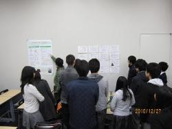 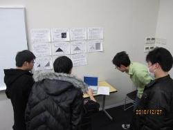 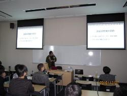 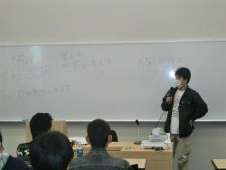 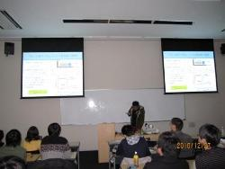 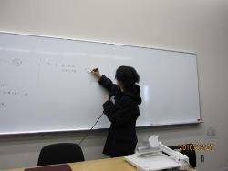 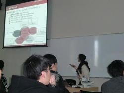
談話会の様子 28日 早稲田大学
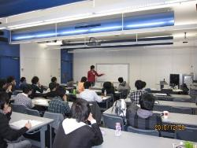 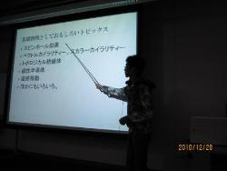 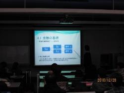 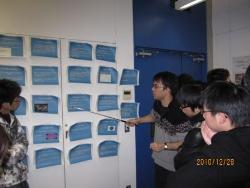 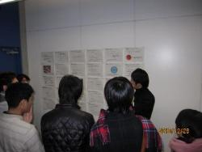 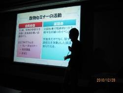 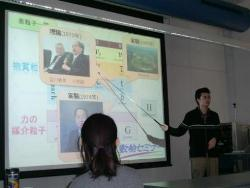
数物セミナー早慶談話会2010 概要
日時・場所
2010年12月27日(月) 13:00～18:00 慶應義塾大学日吉キャンパス 独立館 D206
2010年12月28日(火) 13:00～18:00 早稲田大学西早稲田キャンパス 62号館 Ｗ棟01-08
内容
早稲田大学・慶應義塾大学の学生を中心に様々なテーマで2日間にわたり、講演やポスター発表を行います。また、講演者や参加者を交えての懇談の場を設け、異分野・他大学の学生との交流の機会としていきます。
参加方法
事前の申し込みは不要です。期間中、会場の出入りも自由となっております。
ポスター
詳細はこちらのポスターにも掲載されています。早慶談話会2010ポスター(PDF)
12月27日 慶應義塾大学
タイムテーブル
| 13:00～ | 開会 |
| 13:10～13:55 | 『函手とブラウワー不動点定理』小池開(慶大1年) |
| 14:05～14:50 | 『理学と工学の融合～応用物理の楽しさ～』 梅松旭美(早大応用物理4年) |
| 15:00～15:45 | 『数学とは何か』宮原和大(早大数学3年) |
| 15:55～16:40 | 『超流動～低温物理学への招待～』原野貴幸(慶大物理4年) |
| 16:50～18:00 | ポスターセッション・交流 |
アクセス
◇東急東横線、東急目黒線、横浜市営地下鉄グリーンライン 日吉駅下車、徒歩1分
12月28日 早稲田大学
タイムテーブル
| 13:00～ | 開会 |
| 13:10～13:55 | 『素粒子動物園と力の統一について』 鷲見貴生(早大応用物理2年) |
| 14:05～14:50 | 『グラフ理論の紹介』飯田紘(慶大数理3年) |
| 15:00～15:45 | 『スピントロニクス』花井亮(慶大物理4年) |
| 15:55～16:40 | 『確率分布からブラックショールズまで～正規分布について～』 劉言(早大応用数理3年) |
| 16:50～18:00 | ポスターセッション・交流 |
アクセス
◇JR山手線、地下鉄東京メトロ東西線、西武新宿線 高田馬場駅下車、徒歩15分
◇地下鉄東京メトロ副都心線西早稲田駅下車、出口3（早大理工方面口）がキャンパスに直結